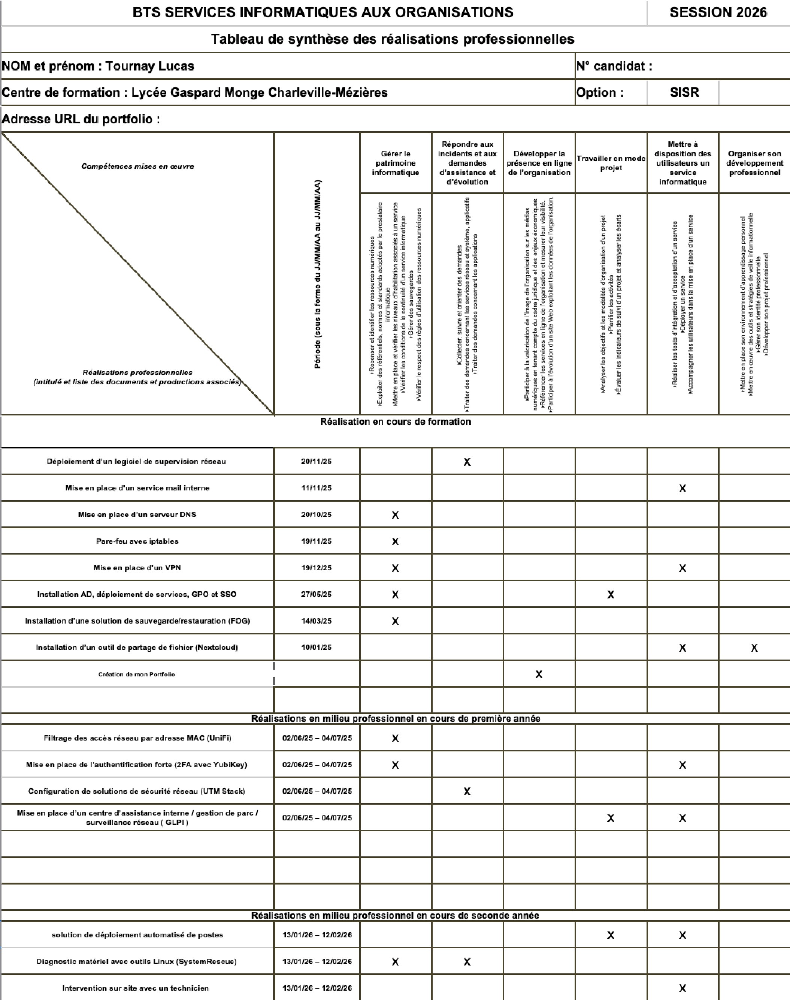

Tableau de Synthèse
Voici mon tableau de synthèse officiel des réalisations professionnelles pour la session BTS SIO 2026.

Voici mon tableau de synthèse officiel des réalisations professionnelles pour la session BTS SIO 2026.
